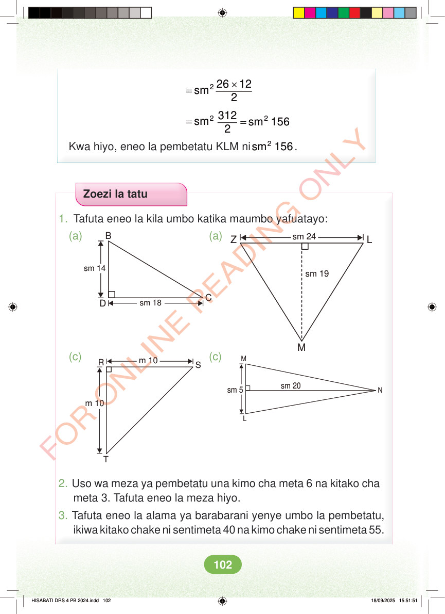

<!DOCTYPE html>
<html lang="sw-TZ"><head><meta charset="utf-8"><meta name="viewport" content="width=device-width,initial-scale=1">
<title>Hisabati: Kitabu cha Mwanafunzi Darasa la Nne</title>
<meta name="title-id" content="pg108_sec001"><meta name="page-section-id" content="113">
<link href="./content/tailwind_output.css" rel="stylesheet"><link href="./assets/libs/fontawesome/css/all.min.css" rel="stylesheet"><link href="./assets/fonts.css" rel="stylesheet">
<style>body{margin:0;background:#eef1ed}main{width:100%;display:flex;justify-content:center;padding:1rem 1rem 5rem;box-sizing:border-box}#content{width:100%;display:flex;justify-content:center}.pdf-page{position:relative;width:min(calc(100vw - 2rem),56rem);aspect-ratio:557.906005859375/767.6690063476562;background:white;box-shadow:0 4px 24px #0002;overflow:hidden}.pdf-page img{position:absolute;inset:0;width:100%;height:100%;object-fit:fill}</style>
</head><body><main><h1 class="sr-only" id="page-heading">Ukurasa wa 108</h1><div id="content" class="opacity-0"><section role="article" data-section-type="pdf_accessible_page" data-section-id="pg108_sec001" aria-labelledby="page-heading" class="pdf-page"><p class="sr-only" data-id="pg108_gp001_tx001">× = 2 26 12 sm 2 = 2 312 sm 2 = 2 sm 156 Kwa hiyo, eneo la pembetatu KLM ni 2 sm 156. Zoezi la tatu 1. Tafuta eneo la kila umbo katika maumbo yafuatayo: B sm 24 (a) (a) Z L sm 14 sm 19 sm 18 D C M M (c) m 10 (c) R S N sm 20 sm 5 m 10 L T 2. Uso wa meza ya pembetatu una kimo cha meta 6 na kitako cha meta 3. Tafuta eneo la meza hiyo. 3. Tafuta eneo la alama ya barabarani yenye umbo la pembetatu, ikiwa kitako chake ni sentimeta 40 na kimo chake ni sentimeta 55. HISABATI DRS 4 PB 2024.indd 102 HISABATI DRS 4 PB 2024.indd 102 18/09/2025 15:51:51 18/09/2025 15:51:51</p></section></div></main><div class="relative z-50" id="interface-container"></div><div class="relative z-50" id="nav-container"></div><script src="./assets/offline-preloader.js?v=audiofix-20260824-1"></script><script src="./assets/scorm.js"></script><script src="./assets/base.bundle.local.js?v=audiofix-20260824-1"></script></body></html>